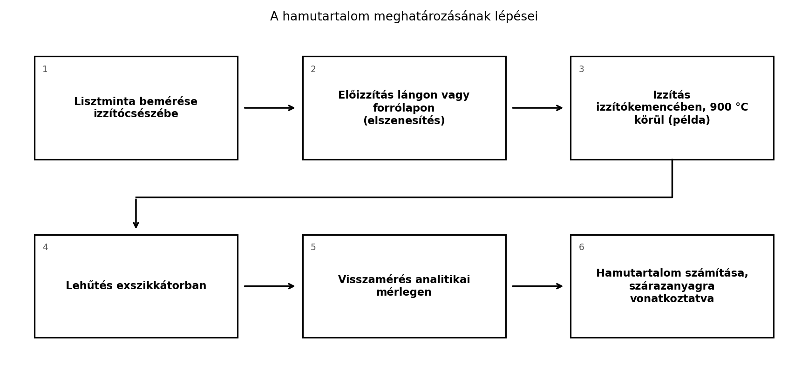

Hajnali műszakban a pék átvesz egy lisztzsákot, amelynek papírja szerint BL 55-ös liszt. Huszonnégy óra múlva kenyér lesz belőle, amelyet a vevők a megszokott világos bél és enyhe íz alapján ítélnek meg. Ha a liszt valójában magasabb hamutartalmú, a kenyér sötétebbé, jellegében teltebbé válik, és a termék mégsem azt adja, amit a gyártmánylap előír. Hasonlóképpen a savanyú kovász savfoka megmutatja, hogy a kovász elég érett-e, nem túl savanyú-e, illetve hogy a késztermékben a kívánt íz kialakult-e. A sótartalom pedig egyszerre érzékszervi, technológiai és táplálkozási kérdés: a sós tésztában az élesztő másképp dolgozik, a termék íze megváltozik, és a túlzott sóbevitelnek közegészségügyi jelentősége van. Ebben az alfejezetben a minőségvizsgálati laboratórium három alapmérését tanuljuk meg: az izzításos hamumeghatározást, a savfok-titrálást és a sótartalom meghatározását.
A hamu-, savfok- és sómérés a nyersanyagtól a késztermékig kíséri a gyártást. Először a liszt hamutartalmát mérjük, hogy igazoljuk a liszttípust. Ezután a kovász vagy a tészta savfokát mérjük, hogy a technológiai érettséget ellenőrizzük. Végül a kész kenyér vagy péksütemény sótartalmát mérjük, hogy a termékösszetétel megfeleljen a gyártmánylapnak és a fogyasztói elvárásnak. Az alábbi folyamatábra a hamumeghatározás lépéseit mutatja, mert ez a legszigorúbb mérési sorrend.

A folyamat szövegesen: bemérés, előizzítás, izzítás, hűtés exszikkátorban, visszamérés, számítás. A teljes lépéssort egy második, párhuzamos beméréssel is elvégezzük; a részleteket a lenti műveletsor adja.
A savfok-titrálás szemléletes képe: a liszt vagy kenyér vizes kivonatából egy tiszta részletet fenolftalein indikátor mellett nátrium-hidroxid-mérőoldattal titrálunk mindaddig, amíg a halvány rózsaszínű szín meg nem jelenik. A fogyott mérőoldat térfogatából számoljuk a savfokot. A sótartalom meghatározásakor hasonló a logika, csak a mérőoldat ezüst-nitrát-oldat, az indikátor kálium-kromát, és a végpontot a vöröses csapadék megjelenése jelzi.
Definíció. Hamutartalom. A liszt vagy sütőipari őrlemény hamutartalma az a tömegszázalékban kifejezett maradék, amely a minta izzítása után visszamarad. A szerves anyagok elégnek, a hamu elsősorban ásványi anyagokat tartalmaz. A hamutartalmat a minta szárazanyag-tartalmára vonatkoztatjuk, hogy a nedvesség ne torzítsa az összehasonlítást. A hazai liszttípus-jelölés (BL 55, BL 80, RL 90) ezért hamutartalom-határokon alapul, amint azt a Lisztfajták, liszttípusok és jelölésük alfejezetben láttuk.
Definíció. Savfok. A sütőipari savfok a minta (liszt, kovász, kenyérbél, tészta) savanyú vegyületeinek mennyiségét jellemzi. A magyar sütőipari gyakorlatban a savfok azt jelenti, hogy 100 g minta vizes kivonatának közömbösítéséhez hány cm³ 1 mol/dm³ nátrium-hidroxid-mérőoldat szükséges (a titrálásnál használt 0,1 mol/dm³-es mérőoldat fogyását ezért tizedére kell átszámítani). A savfok tehát nem pH, hanem titrálható savasságot kifejező szám; mértékegysége gyakran „savfok” vagy „cm³/100 g”. Irányértékek ezen a skálán (tanulási példa): búzaliszt kb. 2–4, búzakenyér kb. 2–4, rozskenyér kb. 5–9, érett rozskovász kb. 10–20 (ellenőrizendő: a vonatkozó módszerszabvány pontos definíciója, mértékegysége és az irányértékek).
Definíció. Sótartalom. A termék sótartalma a minta konyhasó-tartalma, tömegszázalékban kifejezve. A meghatározás leggyakrabban a kloridion-tartalom mérésén alapul, és az eredményt NaCl-ra számítjuk át. A sütőipari termékekben a sótartalom jellemzően 1–2 m/m% körüli, de ez termékcsoportonként eltér (ellenőrizendő: a gyártmánylap és az élelmiszerkönyvi ajánlás).
Szabály. Párhuzamos mérések. Minden vizsgálatot legalább két párhuzamos beméréssel végzünk. A két eredményből átlagot számítunk, és csak akkor fogadjuk el az eredményt, ha a párhuzamos mérések eltérése a módszerben megadott tűrésen belül van. Ellenkező esetben a mérést meg kell ismételni.
Figyelem. Az alfejezetben megadott hőmérséklet, idő és koncentráció tanulási példa. A mindenkori mérési módszert a Magyar Élelmiszerkönyv, a vonatkozó vizsgálati szabvány és a laboratóriumi minőségügyi utasítás határozza meg; ezeket mindig ellenőrizni kell. (ellenőrizendő: aktuális módszerszabványok és laboratóriumi utasítás).
A hamumeghatározás elve egyszerű: a bemért lisztmintát izzítva a szerves anyag (keményítő, fehérje, zsír) elég, és csak az ásványi anyag marad vissza hamuként. Az izzítást izzítókemencében (tokos kemencében) végezzük; a minta előkészítése és a bemérés pontossága döntő.
Az alábbi képsor a műveletsort követi: az 1. kocka a bemérés (1–2. lépés), a 2. az előizzítás (3. lépés), a 3. az izzítás az izzítókemencében (4. lépés), a 4. a lehűtés exszikkátorban (5. lépés), az 5. a visszamérés (6. lépés); a 6. kocka a lenti számítási példát foglalja össze. A sárga háromszög a forró felületet jelöli: a 2–4. kockán a csészét csak tégelyfogóval szabad mozgatni.
A 3. kockán a csészét hosszú tégelyfogóval, hőálló kesztyűben és arcvédővel tesszük be és vesszük ki, mert a kemence belseje és az ajtó környéke is forró. Az 5. kockán az ellenőrzési pont a hamu színe: ha fekete részecske látszik, a szerves anyag nem égett el teljesen, és tovább kell izzítani. A HTML-kiadásban a képsor lépésenként lejátszható.
A hamutartalmat a nedvességtől mentes, szárazanyagra vonatkoztatott tömegszázalékban adjuk meg. Először emlékeztető a Nedvesség- és szárazanyag-tartalom meghatározása alfejezetből: a szárazanyag-tartalom (%) = 100 – nedvességtartalom (%). Ha a minta nedvességtartalma (m/m%), akkor a bemért tömegű minta szárazanyag-tömege:
A hamutartalom (szárazanyagra vonatkoztatva):
Mivel , a végső képlet:
Példa. Üres izzítócsésze tömege 18,2450 g. A bemért liszt tömege 5,0320 g, nedvességtartalma 14,0%. Az izzítás és lehűtés után a csésze a hamuval együtt 18,2800 g. Számítsuk ki a hamutartalmat.
A hamu tömege:
A szárazanyag-tömeg:
A hamutartalom:
A hazai jelölésben a típusszám a hamutartalomra utal (BL 55 kb. 0,55%, BL 80 kb. 0,80%), ezért ez BL 80-as lisztre jellemző (ellenőrizendő: az aktuális liszttípus-határok). Az 1,5% feletti érték már teljes kiőrlésű vagy sötét lisztre utalna.
Számítási gyakorlat (hamu). A bemért liszt tömege 5,1040 g, nedvességtartalma 12,0%. Az üres csésze tömege 21,3300 g, az izzítás utáni tömeg 21,3550 g. Mennyi a hamutartalom?
Figyelem – vegyszerbiztonság. A NaOH-mérőoldat és az ezüst-nitrát maró hatású, a kálium-kromát (a sótartalom-mérés indikátora) rákkeltő hat vegyértékű krómvegyület (ellenőrizendő: biztonsági adatlap). Csak védőszemüvegben, nitrilkesztyűben, pipettalabdával (szájjal pipettázni tilos) dolgozz; a kromátos és ezüstös titrálási maradékot külön, jelölt veszélyeshulladék-gyűjtőbe öntsd, lefolyóba nem. A tanlaborban a kromátos módszert csak oktatói felügyelettel, vagy helyette potenciometriás vagy konduktometriás kloridmérést alkalmazz.
A savfok meghatározása során a minta savanyú vegyületeit nátrium-hidroxid-oldattal közömbösítjük. A lisztben, kovászban vagy kenyérben lévő szerves savak (tejsav, ecetsav) reakcióba lépnek a lúggal; a végpontot fenolftalein indikátor jelzi, amely savas közegben színtelen, lúgos közegben halvány rózsaszín.
A titráló összeállítást (3. lépés) az alábbi ábra mutatja: a bürettát (2) állványba fogjuk (1), a lombik (3) fehér alátéten (4) áll, hogy a halvány rózsaszín színváltás jól látsszon. A két leggyakoribb hibaforrást a részletek mutatják: az A részleten a büretta leolvasását, a B részleten a végpont felismerését.
Tipikus hibák a titrálásnál. (1) A bürettát nem szemmagasságban olvassuk le: felülről vagy alulról nézve a meniszkusz alsó pontja más osztásvonalnál látszik (parallaxishiba), így a fogyás és a savfok is hamis. (2) A végpontot túllépjük: ha a lombik tartalma erős rózsaszínű, a mérőoldat túl sok, a savfok túl nagy – a titrálást új részlettel meg kell ismételni. A mérőoldatot a végpont közelében cseppenként adagoljuk, közben a lombikot folyamatosan rázogatjuk. A HTML-kiadásban a mérőoldat csúszkával adagolható, a lombik színe a fogyással együtt változik.
A savfok definíciója alapján 100 g minta vizes kivonatának közömbösítéséhez szükséges 1 mol/dm³ NaOH-oldat térfogatát (cm³) számítjuk; a titráláshoz 0,1 mol/dm³-es mérőoldatot használunk, ezért a fogyást 0,1-del szorozzuk. Ha a minta tömege (g), a minta vizes kivonatát (cm³) desztillált vízzel készítjük, a titráláshoz kivett részlet térfogata (cm³), a titrálásra fogyott mérőoldat térfogata (cm³), a mérőoldat faktorával korrigálunk, akkor:
A faktor az elméleti koncentrációhoz képest mért valós koncentráció aránya; értéke általában 0,95–1,05 között van (ellenőrizendő: a mérőoldat gyártói adatlapja). Ha a mérőoldat pontosan 0,1 mol/dm³, akkor .
Példa. 10,0 g kovászmintát 100 cm³ vízzel kivonunk. A kivonatból 20,0 cm³-t titrálunk, a fogyott 0,1 mol/dm³ NaOH-oldat 3,0 cm³. A mérőoldat faktorát 1,000-nek ismerjük. A savfok:
Ez az érték érett rozskovászra jellemző (kb. 10–20), a búzaliszté ennél jóval kisebb, kb. 2–4 (tanulási példa; ellenőrizendő a termékre és módszerre vonatkozó irányérték).
Számítási gyakorlat (savfok). Rozskenyér-bélből 5,0 g-ot veszünk, 50 cm³ vízben kivonjuk. A kivonatból 25,0 cm³-t titrálunk, a fogyott 0,1 mol/dm³ NaOH-oldat 1,4 cm³ (faktor 0,998). Mennyi a savfok?
A sótartalom mérésére több módszer létezik; a hagyományos sütőipari laborban gyakran Mohr-féle ezüst-nitrátos titrálást alkalmaznak. Az elv az, hogy a konyhasó kloridionja az ezüst-nitráttal ezüst-klorid csapadékot képez. Amikor az összes klorid elreagált, a kálium-kromát indikátor vörösesbarna ezüst-kromát csapadékot ad, és ez a végpont.
A fogyott ezüst-nitrát-oldat anyagmennyisége megegyezik a kloridion anyagmennyiségével:
ahol a mérőoldat koncentrációja (mol/dm³), a fogyás (cm³, átváltva dm³: 1 cm³ = 0,001 dm³). A NaCl tömege:
ahol a NaCl moláris tömege g/mol. A termék sótartalma tömegszázalékban, ha a minta tömege (g), a kivonat össztérfogata (cm³), a titrálásra kivett részlet (cm³), és a faktor:
Ha mol/dm³, a képlet egyszerűbb, de mindig írjuk ki a mértékegységeket.
Példa. 5,0 g kenyeret 100 cm³ vízzel kivonunk. A szűrletből 20,0 cm³-t titrálunk, a fogyott 0,1 mol/dm³ ezüst-nitrát-oldat 4,4 cm³ (). A sótartalom:
A fogyott oldat anyagmennyisége:
A NaCl tömege a kivett részletben:
Az egész kivonatban (100/20 = 5-szörös):
A sótartalom a bemért 5,0 g mintára:
Ez az érték a szokásos 1–2%-nál magasabb: túlsózásra vagy bemérési hibára utal, ezért a gyártmánylappal össze kell vetni, és a mérést meg kell ismételni (tanulási példa). A sótartalomra nincs általános határérték, de a gyártmánylap és az élelmiszerkönyvi ajánlások, valamint a 1169/2011/EU rendelet tápértékjelölésre vonatkozó adatai irányadók (ellenőrizendő).
Számítási gyakorlat (sótartalom). 4,5 g péksütemény-mintát 200 cm³ vízzel kivonunk. A kivonatból 25,0 cm³-t titrálunk, a fogyott 0,1 mol/dm³ AgNO₃-oldat 3,8 cm³ (faktor 0,995). Mennyi a sótartalom?
A párhuzamos mérésekből az átlagot a két (vagy több) érték számtani közepével számítjuk. Az eltérést az abszolút különbség vagy a relatív eltérés alapján értékeljük. Például ha a hamutartalomra két bemérésből 0,79% és 0,81% adódott, az átlag 0,80%, a különbség 0,02%, ami jó egyezés. A megengedett eltérés a módszerre jellemző; ha ezt túllépi, a mérést meg kell ismételni, és a kiugró értéket nem szabad egyszerűen „kihagyni”, hanem az okot kell megkeresni (pl. szennyezett csésze, nem teljes izzítás, mérési hiba). Az eredményt a módszer pontosságának megfelelően kerekítve, a mértékegységgel együtt közöljük: például „hamutartalom: 0,80 m/m% szárazanyagra”, „savfok: 15 (cm³ 1 mol/dm³ NaOH / 100 g)”, „sótartalom: 2,06 m/m%”.
Előírás. A hamutartalom meghatározására az MSZ EN ISO 2171 szabványt alkalmazzák (ellenőrizendő: aktuális kiadás, a sütőipari alkalmazhatóság). A savfok meghatározására és a sótartalom mérésére a Magyar Élelmiszerkönyv és a vonatkozó vizsgálati szabványok adhatnak iránymutatást (ellenőrizendő: az aktuális módszerszabványok száma és előírásai). A párhuzamos mérések megengedett eltérését a módszervalidálás vagy a laboratóriumi utasítás rögzíti (ellenőrizendő). A vizsgálati eredményeket a gyártmánylapban és a HACCP-dokumentációban meg kell őrizni.
Cél. A hallgató önállóan meghatározza egy lisztminta hamutartalmát izzítással, párhuzamos beméréssel, és az eredményt szárazanyagra vonatkoztatva megadja.
Eszközök és anyagok. Izzítókemence (tokos kemence), izzítócsészék (2 párhuzamos), analitikai mérleg, hőálló fogó, exszikkátor szilikagél szárítószerrel, hővédő kesztyű, védőszemüveg, lisztminta, jegyzőkönyv.
Higiénia. A laboratóriumban tiszta munkaruhát, laborköpenyt, összefogott hajat és védőkesztyűt használj. A csészékhez csak tiszta, száraz eszközzel nyúlj. A lisztminta a laboratóriumi vizsgálatra fenntartott anyag; élelmiszertermelésbe nem kerülhet vissza.
Gépbiztonság. Az izzítókemencét csak oktatói betanítás és engedély után kezelheted. A kemencét tisztításkor, beállításkor le kell állítani és áramtalanítani; a forró csészét kizárólag hőálló fogóval, hosszú szárú kesztyűvel szabad megfogni. A forró felület és a nyílt láng érintése tilos; a haj, a laza ruha és a gyúlékony anyag a forró zónától távol tartandó.
Lépések.
Tipikus hibák a gyakorlatban.
A hamu-, savfok- és sómérés eredményeit a gyártmánylaphoz, a liszt specifikációjához és a hatályos előírásokhoz kell hasonlítani. A hamutartalom alapján ellenőrizzük, hogy a liszt megfelel-e a feltüntetett típusnak; a savfok alapján a kovász érettségét és a termék savanyúságát; a sótartalom alapján az összetétel állandóságát. A mérési jegyzőkönyveknek tartalmazniuk kell a mintaazonosítót, a mérés dátumát, a párhuzamos értékeket, az átlagot, a módszert és az esetleges eltérést. A minőség-ellenőrzés része a vakpróba és a mérőoldat faktorának ellenőrzése is.
1. feladat (A). Írd le a hamutartalom izzításos meghatározásának lépéseit, és magyarázd el, miért hűtjük exszikkátorban a csészét.
2. feladat (A). 10,0 g lisztmintát 100 cm³ vízzel kivonunk, a kivonatból 20,0 cm³-t titrálunk 0,1 mol/dm³ NaOH-oldattal, a fogyás 0,60 cm³ (faktor 1,000). Számítsd ki a savfokot.
3. feladat (B). Egy lisztminta nedvességtartalma 12,5%. A bemért minta 5,1120 g, az üres izzítócsésze 20,4400 g, az izzítás utáni tömeg 20,4760 g. Számítsd ki a hamutartalmat (szárazanyagra)!
4. feladat (B). Egy kenyér sótartalmát Mohr-módszerrel vizsgáljuk. A bemért kenyérbél 5,0000 g. A mintát 100,0 cm³ vízzel kivonjuk. A kivonatból 20,0 cm³-t titrálunk 0,1 mol/dm³ AgNO₃-oldattal; a fogyás 3,5 cm³. A mérőoldat faktorát 1,005-nek ismerjük. Számítsd ki a sótartalmat!
5. feladat (B). Két párhuzamos hamumeghatározás eredménye: 0,78% és 0,82%. Az átlag 0,80%. Számítsd ki a két érték közötti relatív eltérést az átlaghoz képest, és magyarázd el, mit tennél, ha a megengedett eltérés 5% relatív. (Használd a relatív eltérés = |érték – átlag| / átlag * 100 képletet.)
6. feladat (C). Egy rozskovász savfokát akarjuk gyorsan becsülni. A kovászból 8,0 g-ot 80 cm³ vízzel kivonunk, a kivonatból 10,0 cm³-t titrálunk, a fogyott 0,1 mol/dm³ NaOH-oldat 5,6 cm³ (faktor 0,998). Milyen savfok adódik? Értelmezd, mit jelent ez a kovász érettségére nézve (használj a példa szerinti irányértékeket).
7. feladat (D). A gyakorlati útmutató alapján a hamumeghatározásnál az üres csésze tömege 21,3300 g. A bemért liszt 5,1040 g, nedvességtartalma 11,0%. Az izzítás után 21,3550 g a tömeg. A párhuzamos bemérésnél az üres csésze 22,1500 g, a bemért liszt 5,0200 g, az izzítás után 22,1750 g. Számítsd ki mindkét bemérés hamutartalmát, az átlagot és az eltérést. Fogadd-e el az eredményt, ha a megengedett eltérés 0,05% abszolút? Indokold.
A törzsszöveg számítási gyakorlatai. Hamu: ; ; hamu (BL 55-ös lisztre jellemző). Savfok: (rozskenyér-bélre jellemző, kb. 5–9; ellenőrizendő). Sótartalom: ; .
1. feladat (A). A lépések: csésze előkészítése, üres csésze mérése, liszt bemérése, előizzítás, izzítás 900 °C körül, exszikkátorban hűtés, visszamérés, párhuzamos bemérés, számítás. Exszikkátorban hűtés azért szükséges, mert a szárítószer megakadályozza, hogy a hamu nedvességet kössön meg, ami megnövelné a tömegét.
2. feladat (A). A savfok képlete:
Tehát a savfok 3,0, ami búzalisztre jellemző érték (kb. 2–4; ellenőrizendő).
3. feladat (B). A hamu tömege: . A szárazanyag-tömeg: . Hamu:
Ez BL 80-as lisztre jellemző érték.
4. feladat (B). A fogyott AgNO₃-oldat anyagmennyisége:
A NaCl tömege a kivett 20,0 cm³ részletben:
Az egész kivonat (100/20 = 5-szörös):
A bemért 5,0000 g mintára:
Értékelés: ez a szokásos 1–2%-os tartomány felső határa fölött van, ezért a gyártmánylappal össze kell vetni (túlsózás vagy bemérési hiba lehet).
5. feladat (B). Az átlag 0,80%. A 0,78% relatív eltérése: . A 0,82% relatív eltérése: . Mindkettő 5% alatt van, ezért a mérést elfogadnánk (feltéve, hogy a módszer 5% relatív tűrést enged).
6. feladat (C). A savfok:
A kapott 55,9 a példa szerinti irányértéknél (érett rozskovász kb. 10–20) jóval magasabb: a kovász túlérett, túl savanyú; a következő vezetésnél rövidebb érlelési idő, alacsonyabb hőmérséklet vagy nagyobb frissítés szükséges. (Irányértékek ellenőrizendők.)
7. feladat (D). Első bemérés: hamu tömege = . Szárazanyag = . Hamu = .
Második bemérés: hamu tömege = . Szárazanyag = . Hamu = .
Átlag = (BL 55-ös lisztre jellemző). Az eltérés , ami kisebb 0,05%-nál, tehát elfogadható.
A hamutartalom az izzítás után visszamaradó ásványi anyagok mennyiségét mutatja a minta szárazanyag-tömegére vonatkoztatva. Meghatározásához a mintát izzítócsészében 900 °C körüli hőmérsékleten izzítjuk, exszikkátorban lehűtjük, és analitikai mérlegen visszamérjük. A számításnál a nedvességtartalommal korrigálunk: . A savfok a 100 g minta vizes kivonatának közömbösítéséhez szükséges 1 mol/dm³ NaOH-oldat cm³-ben kifejezett térfogata (a 0,1 mol/dm³-es mérőoldat fogyását tizedére kell átszámolni; ellenőrizendő). Fenolftalein indikátor mellett titrálunk, és a fogyásból a hígítási arány figyelembevételével számolunk. A sótartalom jellemzően Mohr-módszerrel, ezüst-nitrátos titrálással mérhető; a kloridion-tartalomból NaCl-tömegre átszámítva adjuk meg. Mindig párhuzamos méréseket végzünk, az eltérést ellenőrizzük, és az eredményt a mérési módszer szerint közöljük. Továbbvitt eredmény: A hamutartalom, savfok és sótartalom fogalmát és mérési elvét használjuk az A liszt sütőipari vizsgálatai alfejezetben, ahol a liszt minősítésére és a próbasütésre is támaszkodunk.